普通高中教科书·地理选择性必修1 自然地理基础.pdf - 图片提取报告
174
总图片数
140
总页数
20.2
总大小(MB)
提取时间: 2026-04-06 23:09:43
未分类
图1 (第1页)
[未识别标题] 第1页第1张图片
[未识别标题] 第1页第1张图片
尺寸: 1637x1146 |
类型: raster |
大小: 481.41KB
图3 (第1页)
[未识别标题] 第1页第3张图片
[未识别标题] 第1页第3张图片
尺寸: 124x235 |
类型: raster |
大小: 8.24KB
图6 (第1页)
[未识别标题] 第1页第6张图片
[未识别标题] 第1页第6张图片
尺寸: 138x125 |
类型: raster |
大小: 4.98KB
图7 (第1页)
[未识别标题] 第1页第7张图片
[未识别标题] 第1页第7张图片
尺寸: 266x123 |
类型: raster |
大小: 9.74KB
图8 (第1页)
[未识别标题] 第1页第8张图片
[未识别标题] 第1页第8张图片
尺寸: 82x121 |
类型: raster |
大小: 3.39KB
图1 (第3页)
[未识别标题] 第3页第1张图片
![[未识别标题] 第3页第1张图片](../images/p003_unknown_3345e43a.png)
[未识别标题] 第3页第1张图片
尺寸: 2516x3579 |
类型: raster |
大小: 6986.78KB
一 地球的运动 2
图1 (第5页)
[未识别标题] 第5页第1张图片
[未识别标题] 第5页第1张图片
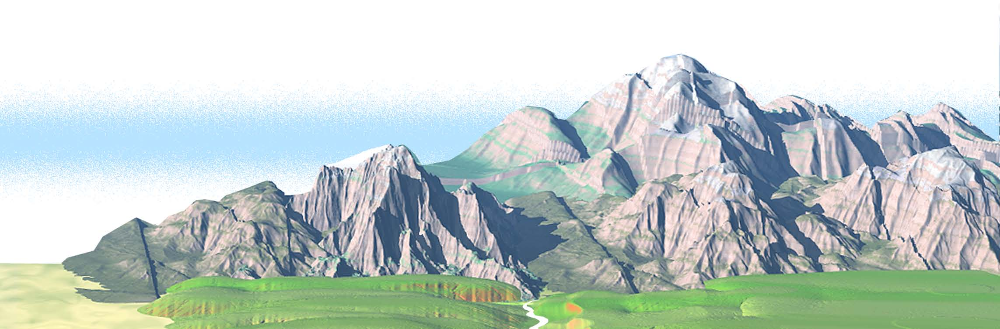
尺寸: 2286x754 |
类型: raster |
大小: 120.46KB
图2 (第5页)
[未识别标题] 第5页第2张图片
[未识别标题] 第5页第2张图片
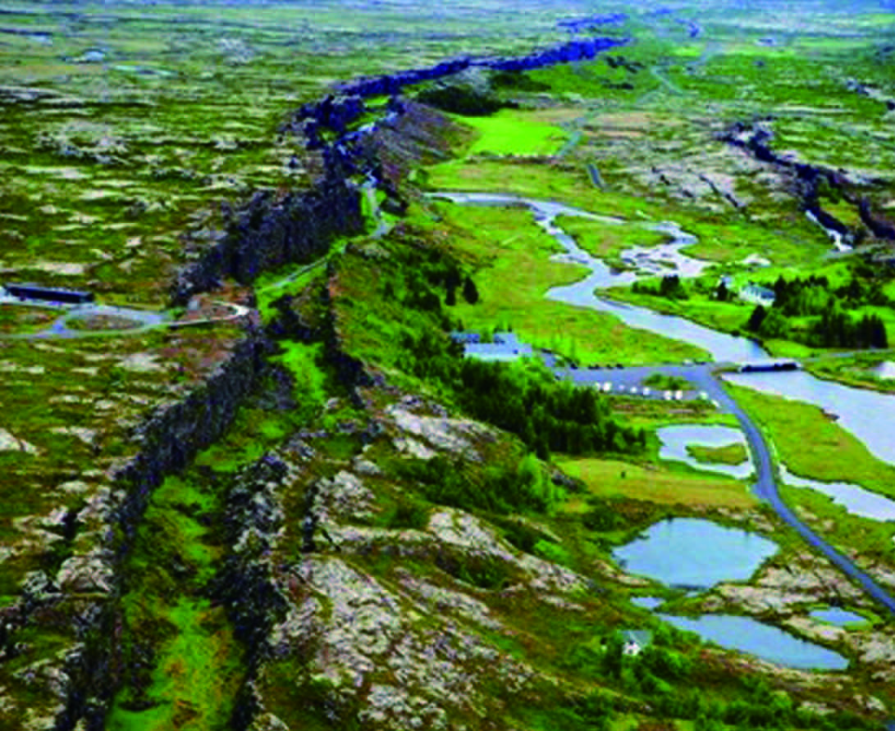
尺寸: 1091x892 |
类型: raster |
大小: 687.9KB
图3 (第5页)
[未识别标题] 第5页第3张图片
[未识别标题] 第5页第3张图片
尺寸: 2266x1908 |
类型: raster |
大小: 830.41KB
图4 (第5页)
[未识别标题] 第5页第4张图片
[未识别标题] 第5页第4张图片
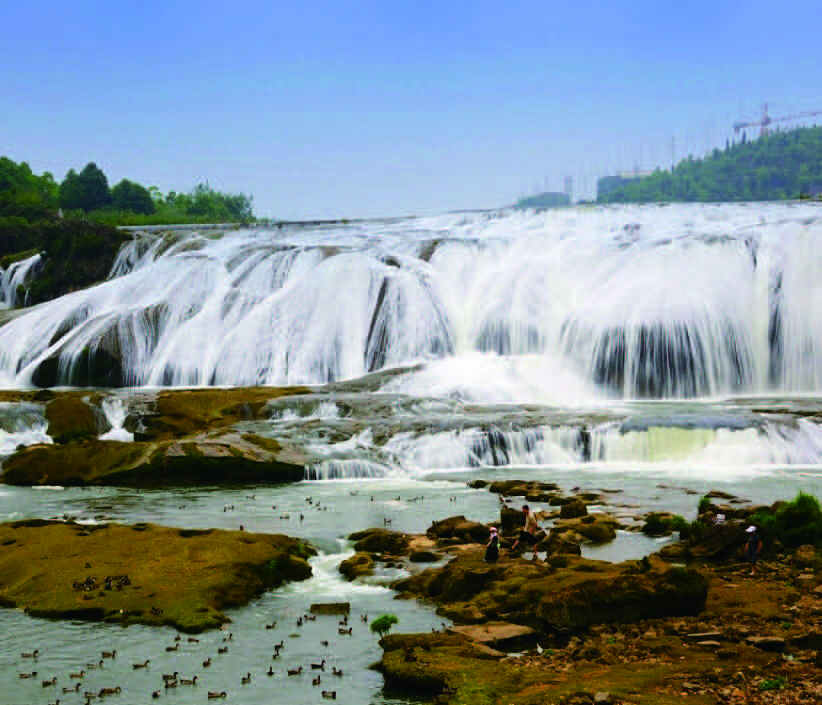
尺寸: 822x705 |
类型: raster |
大小: 394.65KB
图5 (第5页)
[未识别标题] 第5页第5张图片
[未识别标题] 第5页第5张图片
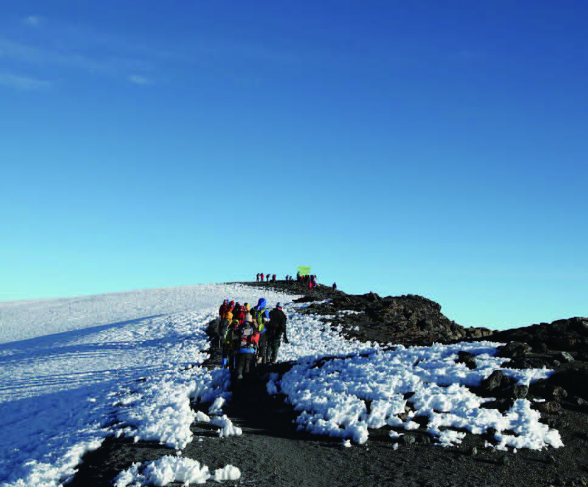
尺寸: 967x800 |
类型: raster |
大小: 405.76KB
一 ◆ 地球的运动
图1 (第6页)
[未识别标题] 第6页第1张图片
[未识别标题] 第6页第1张图片
尺寸: 807x1146 |
类型: raster |
大小: 24.28KB
图2 (第6页)
[未识别标题] 第6页第2张图片
[未识别标题] 第6页第2张图片
尺寸: 102x102 |
类型: raster |
大小: 9.03KB
图3 (第6页)
[未识别标题] 第6页第3张图片
[未识别标题] 第6页第3张图片
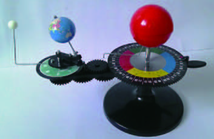
尺寸: 353x230 |
类型: raster |
大小: 46.07KB
图4 (第6页)
[未识别标题] 第6页第4张图片
[未识别标题] 第6页第4张图片
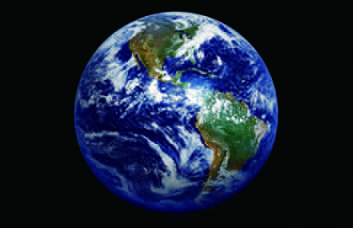
尺寸: 353x228 |
类型: raster |
大小: 49.88KB
一 ◆ 地球的运动 > 一 第10 页：全班学生进行分组活动；各组制订详细的观察计划，尽快实
图1 (第7页)
[未识别标题] 第7页第1张图片
[未识别标题] 第7页第1张图片
尺寸: 808x1146 |
类型: raster |
大小: 25.03KB
一 ◆ 地球的运动 > 一 地球的自转和公转
图1 (第8页)
[未识别标题] 第8页第1张图片
[未识别标题] 第8页第1张图片
尺寸: 264x180 |
类型: raster |
大小: 61.93KB
一 ◆ 地球的运动 > 一 地球的自转和公转 ◆
图1 (第9页)
[未识别标题] 第9页第1张图片
[未识别标题] 第9页第1张图片
尺寸: 236x238 |
类型: raster |
大小: 17.27KB
图1 (第10页)
[未识别标题] 第10页第1张图片
[未识别标题] 第10页第1张图片
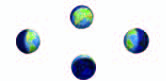
尺寸: 166x81 |
类型: raster |
大小: 7.75KB
图2 (第10页)
[未识别标题] 第10页第2张图片
[未识别标题] 第10页第2张图片
尺寸: 167x81 |
类型: raster |
大小: 7.79KB
图3 (第10页)
[未识别标题] 第10页第3张图片
[未识别标题] 第10页第3张图片
尺寸: 189x92 |
类型: raster |
大小: 8.64KB
图2 (第12页)
[未识别标题] 第12页第2张图片
[未识别标题] 第12页第2张图片
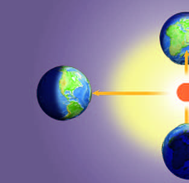
尺寸: 313x304 |
类型: raster |
大小: 32.53KB
图3 (第12页)
[未识别标题] 第12页第3张图片
[未识别标题] 第12页第3张图片
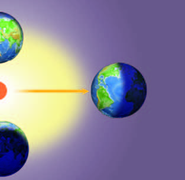
尺寸: 313x304 |
类型: raster |
大小: 30.59KB
图1 (第14页)
[未识别标题] 第14页第1张图片
[未识别标题] 第14页第1张图片
尺寸: 246x171 |
类型: raster |
大小: 39.48KB
一 ◆ 地球的运动 > 二 地球运动的地理意义 ◆
图1 (第15页)
[未识别标题] 第15页第1张图片
[未识别标题] 第15页第1张图片
尺寸: 220x250 |
类型: raster |
大小: 37.58KB
图2 (第15页)
[未识别标题] 第15页第2张图片
[未识别标题] 第15页第2张图片
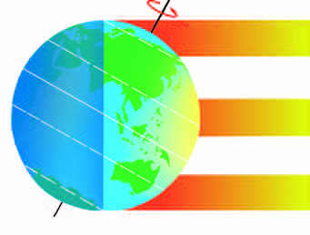
尺寸: 341x259 |
类型: raster |
大小: 34.85KB
图1 (第17页)
[未识别标题] 第17页第1张图片
[未识别标题] 第17页第1张图片
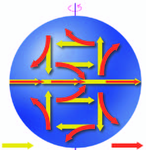
尺寸: 297x305 |
类型: raster |
大小: 49.46KB
图1 (第19页)
[未识别标题] 第19页第1张图片
[未识别标题] 第19页第1张图片
尺寸: 224x266 |
类型: raster |
大小: 4.55KB
图2 (第19页)
[未识别标题] 第19页第2张图片
[未识别标题] 第19页第2张图片
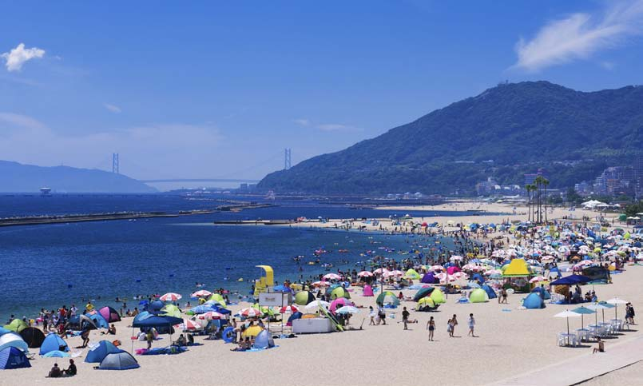
尺寸: 805x483 |
类型: raster |
大小: 55.58KB
图1 (第22页)
[未识别标题] 第22页第1张图片
[未识别标题] 第22页第1张图片
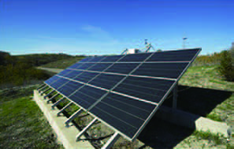
尺寸: 297x189 |
类型: raster |
大小: 50.49KB
图1 (第23页)
[未识别标题] 第23页第1张图片
[未识别标题] 第23页第1张图片
尺寸: 331x220 |
类型: raster |
大小: 83.14KB
二 ◆ 地表形态的变化
图2 (第24页)
[未识别标题] 第24页第2张图片
[未识别标题] 第24页第2张图片
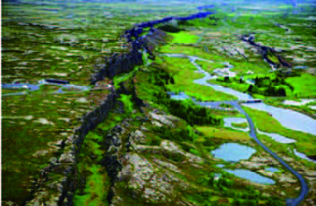
尺寸: 353x230 |
类型: raster |
大小: 109.9KB
图3 (第24页)
[未识别标题] 第24页第3张图片
[未识别标题] 第24页第3张图片
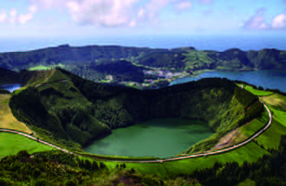
尺寸: 353x230 |
类型: raster |
大小: 70.07KB
二 ◆ 地表形态的变化 > 一 第40 页：展示搜集到的大陆漂移假说和海底扩张学说的相关资料，并
图1 (第25页)
[未识别标题] 第25页第1张图片
[未识别标题] 第25页第1张图片
尺寸: 808x1146 |
类型: raster |
大小: 25.01KB
二 ◆ 地表形态的变化 > 一 地表形态变化的内外力作用
图1 (第26页)
[未识别标题] 第26页第1张图片
[未识别标题] 第26页第1张图片
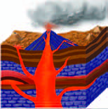
尺寸: 154x156 |
类型: raster |
大小: 27.48KB
二 ◆ 地表形态的变化 > 一 地表形态变化的内外力作用 ◆
图1 (第27页)
[未识别标题] 第27页第1张图片
[未识别标题] 第27页第1张图片
尺寸: 885x737 |
类型: raster |
大小: 122.7KB
图2 (第27页)
[未识别标题] 第27页第2张图片
[未识别标题] 第27页第2张图片
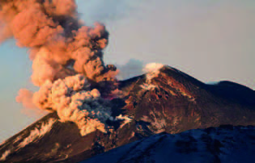
尺寸: 315x202 |
类型: raster |
大小: 48.52KB
图3 (第27页)
[未识别标题] 第27页第3张图片
[未识别标题] 第27页第3张图片
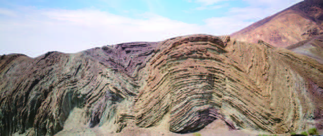
尺寸: 629x266 |
类型: raster |
大小: 162.01KB
图1 (第28页)
[未识别标题] 第28页第1张图片
[未识别标题] 第28页第1张图片
尺寸: 763x636 |
类型: raster |
大小: 99.82KB
图2 (第28页)
[未识别标题] 第28页第2张图片
[未识别标题] 第28页第2张图片
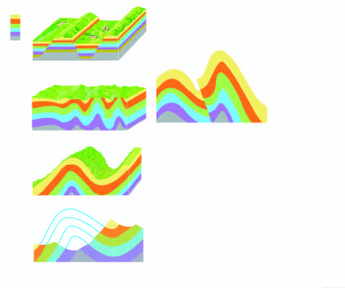
尺寸: 697x581 |
类型: raster |
大小: 90.18KB
图3 (第28页)
[未识别标题] 第28页第3张图片
[未识别标题] 第28页第3张图片
尺寸: 285x189 |
类型: raster |
大小: 60.75KB
图1 (第29页)
[未识别标题] 第29页第1张图片
[未识别标题] 第29页第1张图片
尺寸: 370x256 |
类型: raster |
大小: 122.25KB
图2 (第29页)
[未识别标题] 第29页第2张图片
[未识别标题] 第29页第2张图片
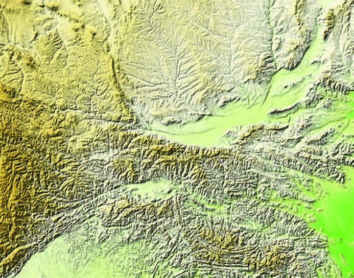
尺寸: 693x545 |
类型: raster |
大小: 587.16KB
图1 (第31页)
[未识别标题] 第31页第1张图片
[未识别标题] 第31页第1张图片
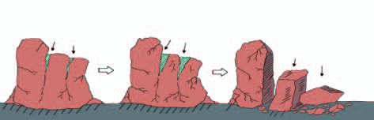
尺寸: 473x152 |
类型: raster |
大小: 39.74KB
图2 (第31页)
[未识别标题] 第31页第2张图片
[未识别标题] 第31页第2张图片
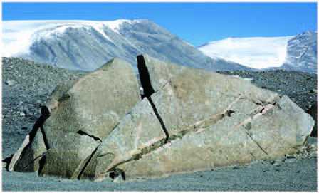
尺寸: 448x271 |
类型: raster |
大小: 123.75KB
图1 (第32页)
[未识别标题] 第32页第1张图片
[未识别标题] 第32页第1张图片
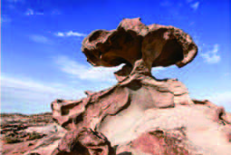
尺寸: 255x171 |
类型: raster |
大小: 40.7KB
图2 (第32页)
[未识别标题] 第32页第2张图片
[未识别标题] 第32页第2张图片
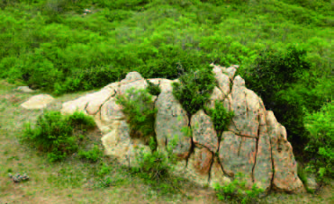
尺寸: 371x227 |
类型: raster |
大小: 102.4KB
图1 (第33页)
[未识别标题] 第33页第1张图片
[未识别标题] 第33页第1张图片
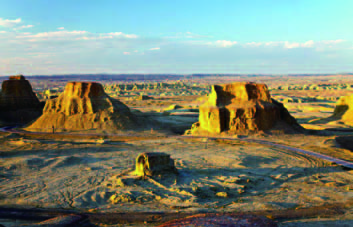
尺寸: 353x227 |
类型: raster |
大小: 78.44KB
图2 (第33页)
[未识别标题] 第33页第2张图片
[未识别标题] 第33页第2张图片
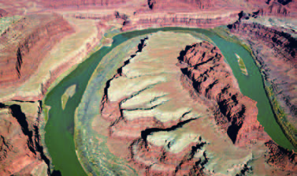
尺寸: 377x223 |
类型: raster |
大小: 93.89KB
图1 (第34页)
[未识别标题] 第34页第1张图片
[未识别标题] 第34页第1张图片
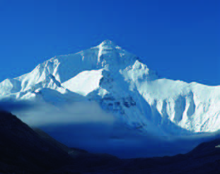
尺寸: 311x246 |
类型: raster |
大小: 34.45KB
图2 (第34页)
[未识别标题] 第34页第2张图片
[未识别标题] 第34页第2张图片
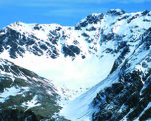
尺寸: 306x246 |
类型: raster |
大小: 94.75KB
图1 (第35页)
[未识别标题] 第35页第1张图片
[未识别标题] 第35页第1张图片
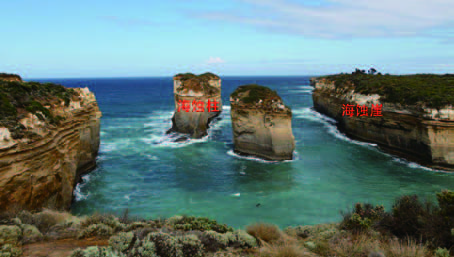
尺寸: 454x257 |
类型: raster |
大小: 98.88KB
图2 (第35页)
[未识别标题] 第35页第2张图片
[未识别标题] 第35页第2张图片
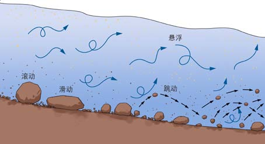
尺寸: 454x246 |
类型: raster |
大小: 13.81KB
图1 (第36页)
[未识别标题] 第36页第1张图片
[未识别标题] 第36页第1张图片
尺寸: 200x208 |
类型: raster |
大小: 41.72KB
图2 (第36页)
[未识别标题] 第36页第2张图片
[未识别标题] 第36页第2张图片
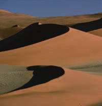
尺寸: 200x208 |
类型: raster |
大小: 18.01KB
图3 (第36页)
[未识别标题] 第36页第3张图片
[未识别标题] 第36页第3张图片
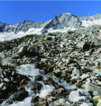
尺寸: 199x208 |
类型: raster |
大小: 59.47KB
图1 (第37页)
[未识别标题] 第37页第1张图片
[未识别标题] 第37页第1张图片
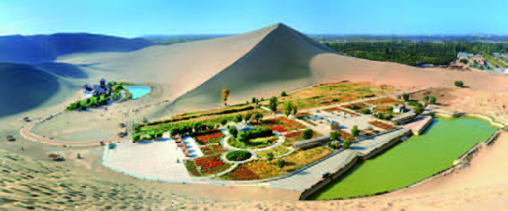
尺寸: 567x236 |
类型: raster |
大小: 116.13KB
图1 (第39页)
[未识别标题] 第39页第1张图片
[未识别标题] 第39页第1张图片
尺寸: 342x229 |
类型: raster |
大小: 107.64KB
图2 (第39页)
[未识别标题] 第39页第2张图片
[未识别标题] 第39页第2张图片
尺寸: 473x267 |
类型: raster |
大小: 106.27KB
图1 (第40页)
[未识别标题] 第40页第1张图片
[未识别标题] 第40页第1张图片
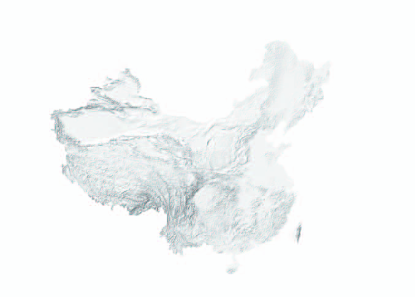
尺寸: 677x485 |
类型: raster |
大小: 65.15KB
图1 (第41页)
[未识别标题] 第41页第1张图片
[未识别标题] 第41页第1张图片
尺寸: 427x198 |
类型: raster |
大小: 76.6KB
图1 (第42页)
[未识别标题] 第42页第1张图片
[未识别标题] 第42页第1张图片
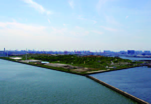
尺寸: 303x208 |
类型: raster |
大小: 34.79KB
图2 (第42页)
[未识别标题] 第42页第2张图片
[未识别标题] 第42页第2张图片
尺寸: 312x209 |
类型: raster |
大小: 87.67KB
图3 (第42页)
[未识别标题] 第42页第3张图片
[未识别标题] 第42页第3张图片
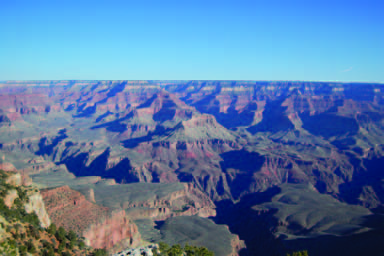
尺寸: 384x256 |
类型: raster |
大小: 69.04KB
图1 (第43页)
[未识别标题] 第43页第1张图片
[未识别标题] 第43页第1张图片
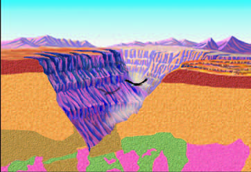
尺寸: 362x248 |
类型: raster |
大小: 75.54KB
图1 (第44页)
[未识别标题] 第44页第1张图片
[未识别标题] 第44页第1张图片
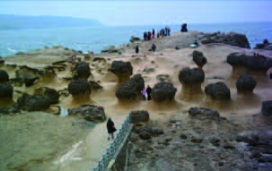
尺寸: 303x191 |
类型: raster |
大小: 55.37KB
图2 (第44页)
[未识别标题] 第44页第2张图片
[未识别标题] 第44页第2张图片
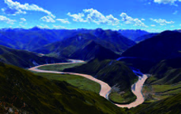
尺寸: 305x193 |
类型: raster |
大小: 51.87KB
图3 (第44页)
[未识别标题] 第44页第3张图片
[未识别标题] 第44页第3张图片
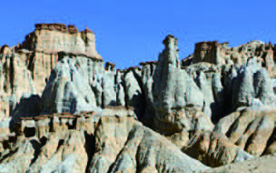
尺寸: 304x190 |
类型: raster |
大小: 70.28KB
二 ◆ 地表形态的变化 > 二 岩石圈的物质组成及循环
图1 (第45页)
[未识别标题] 第45页第1张图片
[未识别标题] 第45页第1张图片
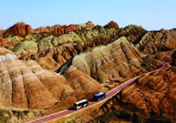
尺寸: 298x208 |
类型: raster |
大小: 73.43KB
图2 (第45页)
[未识别标题] 第45页第2张图片
[未识别标题] 第45页第2张图片
尺寸: 296x208 |
类型: raster |
大小: 50.61KB
图1 (第46页)
[未识别标题] 第46页第1张图片
[未识别标题] 第46页第1张图片
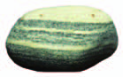
尺寸: 139x87 |
类型: raster |
大小: 12.6KB
图2 (第46页)
[未识别标题] 第46页第2张图片
[未识别标题] 第46页第2张图片
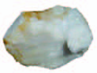
尺寸: 123x93 |
类型: raster |
大小: 8.77KB
图3 (第46页)
[未识别标题] 第46页第3张图片
[未识别标题] 第46页第3张图片
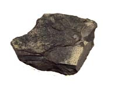
尺寸: 197x145 |
类型: raster |
大小: 4.22KB
图5 (第46页)
[未识别标题] 第46页第5张图片
[未识别标题] 第46页第5张图片
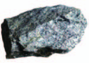
尺寸: 150x107 |
类型: raster |
大小: 21.08KB
图6 (第46页)
[未识别标题] 第46页第6张图片
[未识别标题] 第46页第6张图片
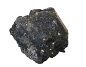
尺寸: 171x134 |
类型: raster |
大小: 3.75KB
图7 (第46页)
[未识别标题] 第46页第7张图片
[未识别标题] 第46页第7张图片
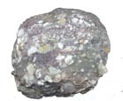
尺寸: 139x114 |
类型: raster |
大小: 3.65KB
图8 (第46页)
[未识别标题] 第46页第8张图片
[未识别标题] 第46页第8张图片
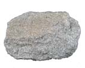
尺寸: 142x114 |
类型: raster |
大小: 3.13KB
图9 (第46页)
[未识别标题] 第46页第9张图片
[未识别标题] 第46页第9张图片
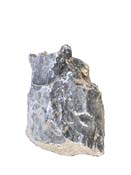
尺寸: 131x175 |
类型: raster |
大小: 3.22KB
图10 (第46页)
[未识别标题] 第46页第10张图片
[未识别标题] 第46页第10张图片
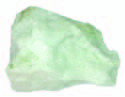
尺寸: 125x97 |
类型: raster |
大小: 6.98KB
二 ◆ 地表形态的变化 > 二 岩石圈的物质组成及循环 ◆
图1 (第47页)
[未识别标题] 第47页第1张图片
[未识别标题] 第47页第1张图片
尺寸: 101x86 |
类型: raster |
大小: 9.57KB
图2 (第47页)
[未识别标题] 第47页第2张图片
[未识别标题] 第47页第2张图片
尺寸: 76x91 |
类型: raster |
大小: 1.73KB
图3 (第47页)
[未识别标题] 第47页第3张图片
[未识别标题] 第47页第3张图片
尺寸: 65x114 |
类型: raster |
大小: 1.93KB
图4 (第47页)
[未识别标题] 第47页第4张图片
[未识别标题] 第47页第4张图片
尺寸: 120x76 |
类型: raster |
大小: 1.75KB
图5 (第47页)
[未识别标题] 第47页第5张图片
[未识别标题] 第47页第5张图片
尺寸: 80x96 |
类型: raster |
大小: 2.42KB
图1 (第48页)
[未识别标题] 第48页第1张图片
[未识别标题] 第48页第1张图片
尺寸: 409x273 |
类型: raster |
大小: 87.07KB
图1 (第49页)
[未识别标题] 第49页第1张图片
[未识别标题] 第49页第1张图片
尺寸: 637x337 |
类型: raster |
大小: 124.1KB
图1 (第50页)
[未识别标题] 第50页第1张图片
[未识别标题] 第50页第1张图片
尺寸: 235x152 |
类型: raster |
大小: 33.35KB
图2 (第50页)
[未识别标题] 第50页第2张图片
[未识别标题] 第50页第2张图片
尺寸: 227x151 |
类型: raster |
大小: 18.97KB
图3 (第50页)
[未识别标题] 第50页第3张图片
[未识别标题] 第50页第3张图片
尺寸: 146x146 |
类型: raster |
大小: 29.85KB
图4 (第50页)
[未识别标题] 第50页第4张图片
[未识别标题] 第50页第4张图片
尺寸: 250x194 |
类型: raster |
大小: 43.72KB
图5 (第50页)
[未识别标题] 第50页第5张图片
[未识别标题] 第50页第5张图片
尺寸: 434x191 |
类型: raster |
大小: 115.39KB
图1 (第51页)
[未识别标题] 第51页第1张图片
[未识别标题] 第51页第1张图片
尺寸: 263x190 |
类型: raster |
大小: 31.07KB
图1 (第52页)
[未识别标题] 第52页第1张图片
[未识别标题] 第52页第1张图片
尺寸: 432x258 |
类型: raster |
大小: 161.06KB
图1 (第53页)
[未识别标题] 第53页第1张图片
[未识别标题] 第53页第1张图片
尺寸: 308x227 |
类型: raster |
大小: 66.35KB
图2 (第53页)
[未识别标题] 第53页第2张图片
[未识别标题] 第53页第2张图片
尺寸: 228x227 |
类型: raster |
大小: 53.32KB
图3 (第53页)
[未识别标题] 第53页第3张图片
[未识别标题] 第53页第3张图片
尺寸: 321x216 |
类型: raster |
大小: 75.8KB
三 ◆ 天气的成因
图1 (第54页)
[未识别标题] 第54页第1张图片
[未识别标题] 第54页第1张图片
尺寸: 808x1146 |
类型: raster |
大小: 24.3KB
图3 (第54页)
[未识别标题] 第54页第3张图片
[未识别标题] 第54页第3张图片
尺寸: 353x230 |
类型: raster |
大小: 64.45KB
图4 (第54页)
[未识别标题] 第54页第4张图片
[未识别标题] 第54页第4张图片
尺寸: 353x230 |
类型: raster |
大小: 28.77KB
三 ◆ 天气的成因 > 一 陆地水体及其关系 ◆
图1 (第55页)
[未识别标题] 第55页第1张图片
[未识别标题] 第55页第1张图片
尺寸: 807x1146 |
类型: raster |
大小: 24.95KB
三 ◆ 天气的成因 > 一 常见天气现象及成因 ◆
图1 (第57页)
[未识别标题] 第57页第1张图片
[未识别标题] 第57页第1张图片
尺寸: 378x260 |
类型: raster |
大小: 24.16KB
图1 (第58页)
[未识别标题] 第58页第1张图片
[未识别标题] 第58页第1张图片
尺寸: 378x260 |
类型: raster |
大小: 24.6KB
图1 (第59页)
[未识别标题] 第59页第1张图片
[未识别标题] 第59页第1张图片
尺寸: 1439x956 |
类型: raster |
大小: 773.27KB
图1 (第65页)
[未识别标题] 第65页第1张图片
[未识别标题] 第65页第1张图片
尺寸: 293x165 |
类型: raster |
大小: 12.55KB
三 ◆ 天气的成因 > 二 气压带、风带对气候的影响 ◆
图1 (第67页)
[未识别标题] 第67页第1张图片
[未识别标题] 第67页第1张图片
尺寸: 286x191 |
类型: raster |
大小: 72.3KB
图1 (第69页)
[未识别标题] 第69页第1张图片
[未识别标题] 第69页第1张图片
尺寸: 533x491 |
类型: raster |
大小: 89.54KB
图1 (第74页)
[未识别标题] 第74页第1张图片
[未识别标题] 第74页第1张图片
尺寸: 595x446 |
类型: raster |
大小: 76.96KB
三 ◆ 天气的成因 > 三 气候的形成
图1 (第76页)
[未识别标题] 第76页第1张图片
[未识别标题] 第76页第1张图片
尺寸: 222x168 |
类型: raster |
大小: 42.46KB
图2 (第76页)
[未识别标题] 第76页第2张图片
[未识别标题] 第76页第2张图片
尺寸: 222x167 |
类型: raster |
大小: 27.01KB
三 ◆ 天气的成因 > 三 气候的形成及其对自然地理景观的影响 ◆
图1 (第78页)
[未识别标题] 第78页第1张图片
[未识别标题] 第78页第1张图片
尺寸: 272x272 |
类型: raster |
大小: 35.92KB
图2 (第78页)
[未识别标题] 第78页第2张图片
[未识别标题] 第78页第2张图片
尺寸: 320x181 |
类型: raster |
大小: 28.02KB
图3 (第78页)
[未识别标题] 第78页第3张图片
[未识别标题] 第78页第3张图片
尺寸: 233x154 |
类型: raster |
大小: 19.28KB
图1 (第79页)
[未识别标题] 第79页第1张图片
[未识别标题] 第79页第1张图片
尺寸: 309x227 |
类型: raster |
大小: 42.05KB
图2 (第79页)
[未识别标题] 第79页第2张图片
[未识别标题] 第79页第2张图片
尺寸: 303x227 |
类型: raster |
大小: 113.48KB
图1 (第80页)
[未识别标题] 第80页第1张图片
[未识别标题] 第80页第1张图片
尺寸: 281x202 |
类型: raster |
大小: 86.32KB
图2 (第80页)
[未识别标题] 第80页第2张图片
[未识别标题] 第80页第2张图片
尺寸: 329x203 |
类型: raster |
大小: 86.98KB
图3 (第80页)
[未识别标题] 第80页第3张图片
[未识别标题] 第80页第3张图片
尺寸: 327x210 |
类型: raster |
大小: 75.67KB
图4 (第80页)
[未识别标题] 第80页第4张图片
[未识别标题] 第80页第4张图片
尺寸: 281x210 |
类型: raster |
大小: 62.2KB
图1 (第81页)
[未识别标题] 第81页第1张图片
[未识别标题] 第81页第1张图片
尺寸: 321x208 |
类型: raster |
大小: 75.83KB
图1 (第82页)
[未识别标题] 第82页第1张图片
[未识别标题] 第82页第1张图片
尺寸: 461x272 |
类型: raster |
大小: 163.37KB
四 ◆ 地球上水的运动
图1 (第84页)
[未识别标题] 第84页第1张图片
[未识别标题] 第84页第1张图片
尺寸: 807x1146 |
类型: raster |
大小: 24.24KB
图3 (第84页)
[未识别标题] 第84页第3张图片
[未识别标题] 第84页第3张图片
尺寸: 353x230 |
类型: raster |
大小: 58.72KB
图4 (第84页)
[未识别标题] 第84页第4张图片
[未识别标题] 第84页第4张图片
尺寸: 353x230 |
类型: raster |
大小: 77.9KB
四 ◆ 地球上水的运动 > 一 陆地水体及其关系 ◆
图1 (第85页)
[未识别标题] 第85页第1张图片
[未识别标题] 第85页第1张图片
尺寸: 808x1146 |
类型: raster |
大小: 25.05KB
图1 (第87页)
[未识别标题] 第87页第1张图片
[未识别标题] 第87页第1张图片
尺寸: 288x193 |
类型: raster |
大小: 75.35KB
图2 (第87页)
[未识别标题] 第87页第2张图片
[未识别标题] 第87页第2张图片
尺寸: 288x192 |
类型: raster |
大小: 31.07KB
图3 (第87页)
[未识别标题] 第87页第3张图片
[未识别标题] 第87页第3张图片
尺寸: 288x192 |
类型: raster |
大小: 45.29KB
图1 (第88页)
[未识别标题] 第88页第1张图片
[未识别标题] 第88页第1张图片
尺寸: 291x191 |
类型: raster |
大小: 44.91KB
图1 (第93页)
[未识别标题] 第93页第1张图片
[未识别标题] 第93页第1张图片
尺寸: 153x271 |
类型: raster |
大小: 41.28KB
图2 (第93页)
[未识别标题] 第93页第2张图片
[未识别标题] 第93页第2张图片
尺寸: 153x271 |
类型: raster |
大小: 40.49KB
图3 (第93页)
[未识别标题] 第93页第3张图片
[未识别标题] 第93页第3张图片
尺寸: 370x303 |
类型: raster |
大小: 78.91KB
图1 (第94页)
[未识别标题] 第94页第1张图片
[未识别标题] 第94页第1张图片
尺寸: 341x230 |
类型: raster |
大小: 84.18KB
图2 (第94页)
[未识别标题] 第94页第2张图片
[未识别标题] 第94页第2张图片
尺寸: 362x302 |
类型: raster |
大小: 83.77KB
图1 (第95页)
[未识别标题] 第95页第1张图片
[未识别标题] 第95页第1张图片
尺寸: 265x170 |
类型: raster |
大小: 54.38KB
图2 (第95页)
[未识别标题] 第95页第2张图片
[未识别标题] 第95页第2张图片
尺寸: 454x219 |
类型: raster |
大小: 77.12KB
图1 (第96页)
[未识别标题] 第96页第1张图片
[未识别标题] 第96页第1张图片
尺寸: 614x289 |
类型: raster |
大小: 126.45KB
图2 (第96页)
[未识别标题] 第96页第2张图片
[未识别标题] 第96页第2张图片
尺寸: 368x206 |
类型: raster |
大小: 76.95KB
四 ◆ 地球上水的运动 > 一 陆地水体及其关系
图1 (第86页)
[未识别标题] 第86页第1张图片
[未识别标题] 第86页第1张图片
尺寸: 215x161 |
类型: raster |
大小: 46.61KB
四 ◆ 地球上水的运动 > 二 世界洋流的分布与影响 ◆
图1 (第100页)
[未识别标题] 第100页第1张图片
[未识别标题] 第100页第1张图片
尺寸: 213x142 |
类型: raster |
大小: 35.2KB
图2 (第100页)
[未识别标题] 第100页第2张图片
[未识别标题] 第100页第2张图片
尺寸: 303x268 |
类型: raster |
大小: 82.28KB
图1 (第101页)
[未识别标题] 第101页第1张图片
[未识别标题] 第101页第1张图片
尺寸: 303x165 |
类型: raster |
大小: 62.22KB
图2 (第101页)
[未识别标题] 第101页第2张图片
[未识别标题] 第101页第2张图片
尺寸: 308x164 |
类型: raster |
大小: 57.3KB
图1 (第102页)
[未识别标题] 第102页第1张图片
[未识别标题] 第102页第1张图片
尺寸: 515x345 |
类型: raster |
大小: 97.69KB
图1 (第104页)
[未识别标题] 第104页第1张图片
[未识别标题] 第104页第1张图片
尺寸: 462x214 |
类型: raster |
大小: 92.57KB
四 ◆ 地球上水的运动 > 三 海—气相互作用及其影响
图1 (第107页)
[未识别标题] 第107页第1张图片
[未识别标题] 第107页第1张图片
尺寸: 303x171 |
类型: raster |
大小: 48.56KB
四 ◆ 地球上水的运动 > 三 海—气相互作用及其影响 ◆
图1 (第111页)
[未识别标题] 第111页第1张图片
[未识别标题] 第111页第1张图片
尺寸: 342x174 |
类型: raster |
大小: 33.13KB
图2 (第111页)
[未识别标题] 第111页第2张图片
[未识别标题] 第111页第2张图片
尺寸: 340x175 |
类型: raster |
大小: 34.31KB
图1 (第113页)
[未识别标题] 第113页第1张图片
[未识别标题] 第113页第1张图片
尺寸: 303x202 |
类型: raster |
大小: 66.43KB
图2 (第113页)
[未识别标题] 第113页第2张图片
[未识别标题] 第113页第2张图片
尺寸: 303x202 |
类型: raster |
大小: 51.1KB
图1 (第114页)
[未识别标题] 第114页第1张图片
[未识别标题] 第114页第1张图片
尺寸: 306x215 |
类型: raster |
大小: 23.15KB
图2 (第114页)
[未识别标题] 第114页第2张图片
[未识别标题] 第114页第2张图片
尺寸: 307x202 |
类型: raster |
大小: 22.43KB
图1 (第117页)
[未识别标题] 第117页第1张图片
[未识别标题] 第117页第1张图片
尺寸: 265x265 |
类型: raster |
大小: 38.6KB
五 ◆ 自然地理环境的
图2 (第118页)
[未识别标题] 第118页第2张图片
[未识别标题] 第118页第2张图片
尺寸: 353x227 |
类型: raster |
大小: 56.3KB
图3 (第118页)
[未识别标题] 第118页第3张图片
[未识别标题] 第118页第3张图片
尺寸: 353x230 |
类型: raster |
大小: 51.09KB
五 ◆ 自然地理环境的 > 一 自然地理环境的整体性
图1 (第120页)
[未识别标题] 第120页第1张图片
[未识别标题] 第120页第1张图片
尺寸: 403x324 |
类型: raster |
大小: 106.22KB
五 ◆ 自然地理环境的 > 二 自然地理环境的地域分异规律 ◆
图1 (第121页)
[未识别标题] 第121页第1张图片
[未识别标题] 第121页第1张图片
尺寸: 296x215 |
类型: raster |
大小: 56.73KB
图1 (第122页)
[未识别标题] 第122页第1张图片
[未识别标题] 第122页第1张图片
尺寸: 171x220 |
类型: raster |
大小: 37.31KB
图1 (第123页)
[未识别标题] 第123页第1张图片
[未识别标题] 第123页第1张图片
尺寸: 275x193 |
类型: raster |
大小: 56.41KB
图2 (第123页)
[未识别标题] 第123页第2张图片
[未识别标题] 第123页第2张图片
尺寸: 276x193 |
类型: raster |
大小: 52.83KB
图1 (第124页)
[未识别标题] 第124页第1张图片
[未识别标题] 第124页第1张图片
尺寸: 83x110 |
类型: raster |
大小: 9.19KB
图4 (第124页)
[未识别标题] 第124页第4张图片
[未识别标题] 第124页第4张图片
尺寸: 521x380 |
类型: raster |
大小: 152.49KB
图1 (第127页)
[未识别标题] 第127页第1张图片
[未识别标题] 第127页第1张图片
尺寸: 259x171 |
类型: raster |
大小: 59.9KB
图2 (第127页)
[未识别标题] 第127页第2张图片
[未识别标题] 第127页第2张图片
尺寸: 256x171 |
类型: raster |
大小: 41.62KB
图1 (第131页)
[未识别标题] 第131页第1张图片
[未识别标题] 第131页第1张图片
尺寸: 245x224 |
类型: raster |
大小: 56.47KB
图1 (第132页)
[未识别标题] 第132页第1张图片
[未识别标题] 第132页第1张图片
尺寸: 340x491 |
类型: raster |
大小: 156.72KB
图1 (第133页)
[未识别标题] 第133页第1张图片
[未识别标题] 第133页第1张图片
尺寸: 301x191 |
类型: raster |
大小: 29.77KB
图2 (第133页)
[未识别标题] 第133页第2张图片
[未识别标题] 第133页第2张图片
尺寸: 302x191 |
类型: raster |
大小: 59.33KB
图1 (第134页)
[未识别标题] 第134页第1张图片
[未识别标题] 第134页第1张图片
尺寸: 344x273 |
类型: raster |
大小: 60.69KB
图1 (第135页)
[未识别标题] 第135页第1张图片
[未识别标题] 第135页第1张图片
尺寸: 370x208 |
类型: raster |
大小: 72.55KB
图1 (第136页)
[未识别标题] 第136页第1张图片
[未识别标题] 第136页第1张图片
尺寸: 288x204 |
类型: raster |
大小: 58.54KB
图2 (第136页)
[未识别标题] 第136页第2张图片
[未识别标题] 第136页第2张图片
尺寸: 416x374 |
类型: raster |
大小: 50.47KB
图11 (第140页)
[未识别标题] 第140页第11张图片
[未识别标题] 第140页第11张图片
尺寸: 1637x1145 |
类型: raster |
大小: 477.33KB
图16 (第140页)
[未识别标题] 第140页第16张图片
[未识别标题] 第140页第16张图片
尺寸: 249x149 |
类型: raster |
大小: 9.02KB
五 ◆ 自然地理环境的 > 二 自然地理环境的地域分异规律
图1 (第128页)
[未识别标题] 第128页第1张图片
[未识别标题] 第128页第1张图片
尺寸: 227x294 |
类型: raster |
大小: 75.37KB